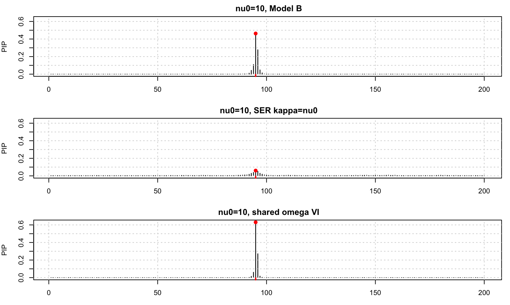
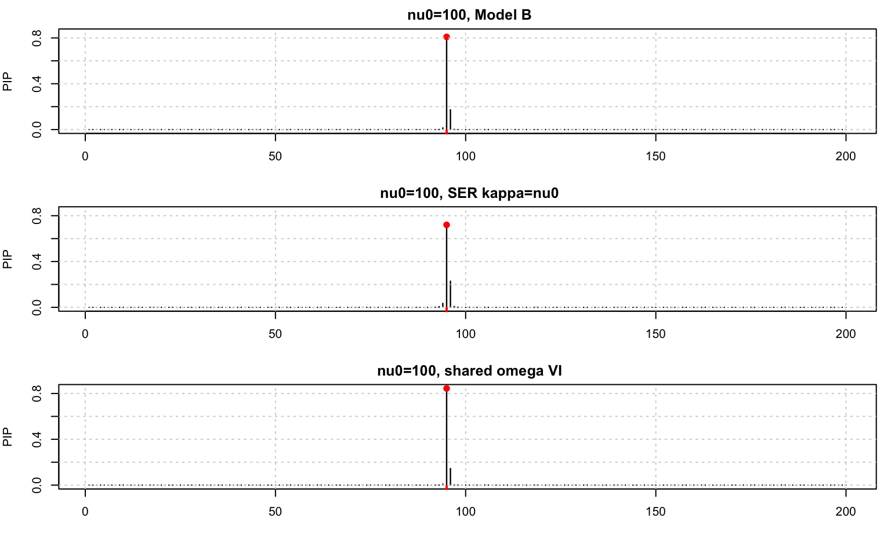
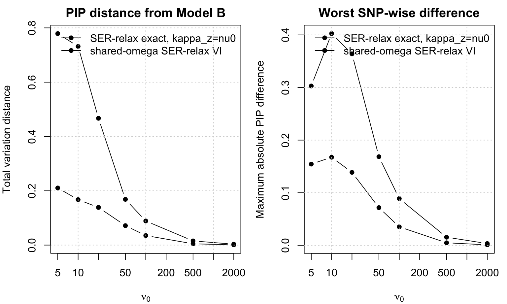

Last updated: 2026-07-01
Checks: 7 0
Knit directory: susie-relax/
This reproducible R Markdown analysis was created with workflowr (version 1.7.1). The Checks tab describes the reproducibility checks that were applied when the results were created. The Past versions tab lists the development history.
Great! Since the R Markdown file has been committed to the Git repository, you know the exact version of the code that produced these results.
Great job! The global environment was empty. Objects defined in the global environment can affect the analysis in your R Markdown file in unknown ways. For reproduciblity it’s best to always run the code in an empty environment.
The command set.seed(20260621) was run prior to running
the code in the R Markdown file. Setting a seed ensures that any results
that rely on randomness, e.g. subsampling or permutations, are
reproducible.
Great job! Recording the operating system, R version, and package versions is critical for reproducibility.
Nice! There were no cached chunks for this analysis, so you can be confident that you successfully produced the results during this run.
Great job! Using relative paths to the files within your workflowr project makes it easier to run your code on other machines.
Great! You are using Git for version control. Tracking code development and connecting the code version to the results is critical for reproducibility.
The results in this page were generated with repository version 0fbaeb8. See the Past versions tab to see a history of the changes made to the R Markdown and HTML files.
Note that you need to be careful to ensure that all relevant files for
the analysis have been committed to Git prior to generating the results
(you can use wflow_publish or
wflow_git_commit). workflowr only checks the R Markdown
file, but you know if there are other scripts or data files that it
depends on. Below is the status of the Git repository when the results
were generated:
Ignored files:
Ignored: .DS_Store
Ignored: .Rhistory
Ignored: .Rproj.user/
Ignored: .claude/
Ignored: analysis/.Rhistory
Ignored: tex/.DS_Store
Untracked files:
Untracked: tex/ideal-PIP-discussion.aux
Untracked: tex/ideal-PIP-discussion.log
Untracked: tex/ideal-PIP-discussion.out
Untracked: tex/ideal-PIP-discussion.pdf
Untracked: tex/ideal-PIP-discussion.synctex.gz
Untracked: tex/ideal-PIP-discussion.tex
Unstaged changes:
Modified: tex/susie-love-revisit-extension.aux
Modified: tex/susie-love-revisit-extension.log
Modified: tex/susie-love-revisit-extension.out
Modified: tex/susie-love-revisit-extension.pdf
Modified: tex/susie-love-revisit-extension.synctex.gz
Modified: tex/susie-love-revisit-extension.tex
Note that any generated files, e.g. HTML, png, CSS, etc., are not included in this status report because it is ok for generated content to have uncommitted changes.
These are the previous versions of the repository in which changes were
made to the R Markdown
(analysis/ser-relax-vs-model-b-pip.Rmd) and HTML
(docs/ser-relax-vs-model-b-pip.html) files. If you’ve
configured a remote Git repository (see ?wflow_git_remote),
click on the hyperlinks in the table below to view the files as they
were in that past version.
| File | Version | Author | Date | Message |
|---|---|---|---|---|
| Rmd | 9b3d13d | dodat-stats | 2026-06-30 | Add SER relax model B PIP analysis |
knitr::opts_chunk$set(
echo = TRUE,
message = FALSE,
warning = FALSE,
fig.width = 8,
fig.height = 4.8
)The goal is to compare the exact single-effect PIP weights from
SER-relax with the closed-form PIP weights from Model B in
tex/susie-love-revisit-extension.tex.
Model B has the closed-form weight \[ w_j^B \propto N\left(x_j;0,\sigma_0^2+\frac1N\right) \left(1+\frac{Nx_j^2}{\nu_0}\right)^{(\nu_0+3)/2}. \]
For SER-relax, after integrating out \(z_j\), we get \[
p(x\mid \gamma=j,\beta)
=
N\left(x_j;\beta,\frac1N\right)
N_{J-1}\left(
x_{-j};x_j\mu_j,
\left\{\frac1N+\frac{\beta^2}{\kappa_z}\right\}S_j
\right),
\] Here we use the parameterization \(\kappa_z=\nu_0\), matching the comparison
calculation in tex/susie-love-revisit-extension.tex.
After integrating out \(\beta\), \[ w_j^{\mathrm{relax}} \propto N\left(x_j;0,\sigma_0^2+\frac1N\right) E_{\beta\mid x_j} \left[ c(\beta)^{-(J-1)/2} \exp\left\{-\frac{r_j^2}{2c(\beta)}\right\} \right], \] where \[ c(\beta)=\frac1N+\frac{\beta^2}{\kappa_z}, \qquad r_j^2=x^\top\bar R^{-1}x-x_j^2, \] and \[ \beta\mid x_j \sim N\left( \frac{N}{N+\sigma_0^{-2}}x_j, \frac{1}{N+\sigma_0^{-2}} \right). \]
The question is whether these normalized PIPs are actually close for representative values of \(\nu_0\).
We also compare against the new shared-\(\omega\) model from
tex/susie-love-revisit-extension.tex. Its single-effect
model is \[
x\mid \beta,\gamma=j,z_j,\omega_j
\sim
N_J\left(\beta u_j(z_j),\frac{\bar R}{N\omega_j}\right),
\] \[
z_j\mid\omega_j
\sim
N_{J-1}\left(\mu_j,\frac{S_j}{\nu_0\omega_j}\right),
\qquad
\omega_j\sim
\operatorname{Gamma}\left(\frac{\nu_0+3}{2},\frac{\nu_0}{2}\right).
\] For this model we compute PIPs using a local mean-field VI
update for each candidate causal SNP.
ar_correlation <- function(J, rho) {
idx <- seq_len(J)
rho ^ abs(outer(idx, idx, "-"))
}
softmax <- function(logw) {
z <- logw - max(logw)
ez <- exp(z)
ez / sum(ez)
}
logsumexp <- function(x) {
m <- max(x)
m + log(sum(exp(x - m)))
}
gauss_hermite <- function(n = 41) {
i <- seq_len(n - 1)
J <- matrix(0, n, n)
off <- sqrt(i / 2)
J[cbind(i, i + 1)] <- off
J[cbind(i + 1, i)] <- off
eg <- eigen(J, symmetric = TRUE)
o <- order(eg$values)
nodes <- eg$values[o]
weights <- sqrt(pi) * eg$vectors[1, o]^2
list(nodes = nodes, weights = weights)
}
model_b_pip <- function(x, N, sigma2, nu0) {
logw <- dnorm(x, 0, sqrt(sigma2 + 1 / N), log = TRUE) +
((nu0 + 3) / 2) * log1p(N * x^2 / nu0)
softmax(logw)
}
ser_relax_exact_pip <- function(x, Rbar, N, sigma2, nu0,
kappa_z = nu0,
gh = gauss_hermite(41)) {
J <- length(x)
p <- J - 1
Omega_x <- solve(Rbar, x)
q <- as.numeric(crossprod(x, Omega_x))
r2 <- pmax(q - x^2, 0)
v_beta <- 1 / (N + 1 / sigma2)
m_beta <- (N / (N + 1 / sigma2)) * x
sd_beta <- sqrt(v_beta)
logw <- numeric(J)
log_gh_w <- log(gh$weights / sqrt(pi))
for (j in seq_len(J)) {
beta_nodes <- m_beta[j] + sqrt(2) * sd_beta * gh$nodes
c_nodes <- 1 / N + beta_nodes^2 / kappa_z
log_kernel <- -(p / 2) * log(c_nodes) - r2[j] / (2 * c_nodes)
log_expect <- logsumexp(log_gh_w + log_kernel)
logw[j] <- dnorm(x[j], 0, sqrt(sigma2 + 1 / N), log = TRUE) +
log_expect
}
softmax(logw)
}
shared_omega_vi_pip <- function(x, Rbar, N, sigma2, nu0,
max_iter = 500, tol = 1e-10) {
J <- length(x)
p <- J - 1
Omega <- solve(Rbar)
logdet_Rbar <- as.numeric(determinant(Rbar, logarithm = TRUE)$modulus)
xOx <- as.numeric(crossprod(x, Omega %*% x))
C <- pmax(xOx - x^2, 0)
a0 <- (nu0 + 3) / 2
b0 <- nu0 / 2
a_omega <- a0 + (J + p) / 2
compute_abq <- function(j, z_scale, z_denom) {
Q <- p / z_denom + z_scale^2 * C[j]
A <- 1 + Q
B <- x[j] + z_scale * C[j]
list(A = A, B = B, Q = Q)
}
local_elbo <- function(j, state) {
eomega <- state$aomega / state$bomega
elogomega <- digamma(state$aomega) - log(state$bomega)
beta2 <- state$vbeta + state$mbeta^2
abq <- compute_abq(j, state$z_scale, state$z_denom)
Lquad <- xOx - 2 * state$mbeta * abq$B + beta2 * abq$A
eloglik <- -J / 2 * log(2 * pi) -
0.5 * (logdet_Rbar - J * log(N)) +
J / 2 * elogomega -
N / 2 * eomega * Lquad
elog_pbeta <- -0.5 * log(2 * pi * sigma2) - beta2 / (2 * sigma2)
elog_pz <- -p / 2 * log(2 * pi) -
0.5 * logdet_Rbar +
p / 2 * log(nu0) +
p / 2 * elogomega -
nu0 / 2 * eomega * abq$Q
elog_pomega <- a0 * log(b0) - lgamma(a0) +
(a0 - 1) * elogomega - b0 * eomega
elog_qbeta <- -0.5 * log(2 * pi * state$vbeta) - 0.5
logdet_vz <- logdet_Rbar - p * log(state$z_denom)
elog_qz <- -p / 2 * log(2 * pi) - 0.5 * logdet_vz - p / 2
elog_qomega <- state$aomega * log(state$bomega) -
lgamma(state$aomega) +
(state$aomega - 1) * elogomega -
state$bomega * eomega
-log(J) + eloglik + elog_pbeta + elog_pz + elog_pomega -
elog_qbeta - elog_qz - elog_qomega
}
fit_one <- function(j) {
eomega <- a0 / b0
z_scale <- 0
z_denom <- eomega * nu0
state <- list(
mbeta = 0,
vbeta = sigma2,
z_scale = z_scale,
z_denom = z_denom,
aomega = a_omega,
bomega = b0 + 0.5 * N * xOx
)
old_elbo <- -Inf
for (iter in seq_len(max_iter)) {
eomega <- state$aomega / state$bomega
abq <- compute_abq(j, state$z_scale, state$z_denom)
vbeta <- 1 / (1 / sigma2 + N * eomega * abq$A)
mbeta <- vbeta * N * eomega * abq$B
beta2 <- vbeta + mbeta^2
z_denom <- eomega * (N * beta2 + nu0)
z_scale <- N * mbeta / (N * beta2 + nu0)
abq <- compute_abq(j, z_scale, z_denom)
Lquad <- xOx - 2 * mbeta * abq$B + beta2 * abq$A
bomega <- b0 + N / 2 * Lquad + nu0 / 2 * abq$Q
state <- list(
mbeta = mbeta,
vbeta = vbeta,
z_scale = z_scale,
z_denom = z_denom,
aomega = a_omega,
bomega = bomega
)
elbo <- local_elbo(j, state)
if (is.finite(old_elbo) && abs(elbo - old_elbo) < tol * (1 + abs(old_elbo))) {
break
}
old_elbo <- elbo
}
list(state = state, elbo = local_elbo(j, state))
}
fits <- lapply(seq_len(J), fit_one)
local <- vapply(fits, `[[`, numeric(1), "elbo")
list(
pi = softmax(local),
local_elbo = local,
states = lapply(fits, `[[`, "state")
)
}
pip_metrics <- function(pip, reference, label, nu0, causal) {
data.frame(
method = label,
nu0 = nu0,
top_snp = which.max(pip),
top_pip = max(pip),
causal_pip = sum(pip[causal]),
max_abs_diff = max(abs(pip - reference)),
total_variation = 0.5 * sum(abs(pip - reference)),
corr_with_model_b = suppressWarnings(cor(pip, reference)),
model_b_top_pip_at_method_top = reference[which.max(pip)]
)
}
plot_compare <- function(pip_list, causal, main) {
old_par <- par(no.readonly = TRUE)
on.exit(par(old_par), add = TRUE)
ymax <- max(unlist(pip_list))
par(mfrow = c(length(pip_list), 1), mar = c(3, 4, 2, 1))
for (nm in names(pip_list)) {
pip <- pip_list[[nm]]
plot(
seq_along(pip), pip,
type = "h",
lwd = 1.2,
ylim = c(0, ymax),
xlab = "SNP index",
ylab = "PIP",
main = paste(main, nm)
)
points(causal, pip[causal], pch = 19, col = "red")
rug(causal, col = "red", lwd = 2)
grid()
}
}This setup is deliberately simple and reproducible. We use an AR(1) reference LD matrix so that the comparison only tests the PIP formulas, not the coalescent simulator.
set.seed(1)
J <- 200L
N <- 20000L
rho <- 0.9
Rbar <- ar_correlation(J, rho)
causal <- 95L
beta_true <- 0.03
sigma2 <- beta_true^2
x <- as.numeric(beta_true * Rbar[, causal] +
drop(t(chol(Rbar / N)) %*% rnorm(J)))
nu0_grid <- c(5, 10, 20, 50, 100, 500, 2000)
data.frame(
J = J,
N = N,
rho = rho,
causal = causal,
beta_true = beta_true,
sigma2 = sigma2,
max_abs_x = max(abs(x)),
top_x_snp = which.max(abs(x))
) J N rho causal beta_true sigma2 max_abs_x top_x_snp
1 200 20000 0.9 95 0.03 9e-04 0.04319045 95gh <- gauss_hermite(51)
all_results <- list()
pip_examples <- list()
for (nu0 in nu0_grid) {
pip_b <- model_b_pip(x, N, sigma2, nu0)
pip_ser_extension <- ser_relax_exact_pip(
x, Rbar, N, sigma2, nu0,
kappa_z = nu0,
gh = gh
)
fit_shared <- shared_omega_vi_pip(
x, Rbar, N, sigma2, nu0,
max_iter = 500,
tol = 1e-10
)
pip_shared_vi <- fit_shared$pi
all_results[[as.character(nu0)]] <- rbind(
pip_metrics(pip_b, pip_b, "Model B closed form", nu0, causal),
pip_metrics(pip_ser_extension, pip_b,
"SER-relax exact, kappa_z=nu0", nu0, causal),
pip_metrics(pip_shared_vi, pip_b,
"shared-omega SER-relax VI", nu0, causal)
)
if (nu0 %in% c(10, 100, 2000)) {
pip_examples[[paste0("nu0=", nu0, ", Model B")]] <- pip_b
pip_examples[[paste0("nu0=", nu0, ", SER kappa=nu0")]] <-
pip_ser_extension
pip_examples[[paste0("nu0=", nu0, ", shared omega VI")]] <-
pip_shared_vi
}
}
comparison <- do.call(rbind, all_results)
row.names(comparison) <- NULL
comparison method nu0 top_snp top_pip causal_pip max_abs_diff
1 Model B closed form 5 95 0.31962231 0.31962231 0.0000000000
2 SER-relax exact, kappa_z=nu0 5 95 0.01672633 0.01672633 0.3028959762
3 shared-omega SER-relax VI 5 95 0.47403232 0.47403232 0.1544100091
4 Model B closed form 10 95 0.46276423 0.46276423 0.0000000000
5 SER-relax exact, kappa_z=nu0 10 95 0.06028065 0.06028065 0.4024835838
6 shared-omega SER-relax VI 10 95 0.63022343 0.63022343 0.1674592016
7 Model B closed form 20 95 0.60541539 0.60541539 0.0000000000
8 SER-relax exact, kappa_z=nu0 20 95 0.24140985 0.24140985 0.3640055331
9 shared-omega SER-relax VI 20 95 0.74413105 0.74413105 0.1387156600
10 Model B closed form 50 95 0.74585682 0.74585682 0.0000000000
11 SER-relax exact, kappa_z=nu0 50 95 0.57736258 0.57736258 0.1684942380
12 shared-omega SER-relax VI 50 95 0.81747720 0.81747720 0.0716203833
13 Model B closed form 100 95 0.80900058 0.80900058 0.0000000000
14 SER-relax exact, kappa_z=nu0 100 95 0.72017104 0.72017104 0.0888295382
15 shared-omega SER-relax VI 100 95 0.84418284 0.84418284 0.0351822604
16 Model B closed form 500 95 0.86691656 0.86691656 0.0000000000
17 SER-relax exact, kappa_z=nu0 500 95 0.85149012 0.85149012 0.0154264440
18 shared-omega SER-relax VI 500 95 0.87172631 0.87172631 0.0048097484
19 Model B closed form 2000 95 0.87840943 0.87840943 0.0000000000
20 SER-relax exact, kappa_z=nu0 2000 95 0.87507342 0.87507342 0.0033360127
21 shared-omega SER-relax VI 2000 95 0.87930855 0.87930855 0.0008991209
total_variation corr_with_model_b model_b_top_pip_at_method_top
1 0.0000000000 1.0000000 0.3196223
2 0.7788987123 0.8176631 0.3196223
3 0.2103968742 0.9807600 0.3196223
4 0.0000000000 1.0000000 0.4627642
5 0.7317103088 0.8823855 0.4627642
6 0.1674592016 0.9812587 0.4627642
7 0.0000000000 1.0000000 0.6054154
8 0.4669888070 0.9426535 0.6054154
9 0.1387156600 0.9873140 0.6054154
10 0.0000000000 1.0000000 0.7458568
11 0.1684942380 0.9837441 0.7458568
12 0.0716203833 0.9964780 0.7458568
13 0.0000000000 1.0000000 0.8090006
14 0.0888295382 0.9948856 0.8090006
15 0.0351822604 0.9991539 0.8090006
16 0.0000000000 1.0000000 0.8669166
17 0.0154264440 0.9998432 0.8669166
18 0.0048097484 0.9999847 0.8669166
19 0.0000000000 1.0000000 0.8784094
20 0.0033360127 0.9999928 0.8784094
21 0.0008991209 0.9999995 0.8784094plot_compare(
pip_examples[c("nu0=10, Model B",
"nu0=10, SER kappa=nu0",
"nu0=10, shared omega VI")],
causal,
main = ""
)
plot_compare(
pip_examples[c("nu0=100, Model B",
"nu0=100, SER kappa=nu0",
"nu0=100, shared omega VI")],
causal,
main = ""
)
ser_rows <- comparison[comparison$method != "Model B closed form", ]
old_par <- par(no.readonly = TRUE)
on.exit(par(old_par), add = TRUE)
par(mfrow = c(1, 2), mar = c(4, 4, 2, 1))
plot(
NA,
xlim = range(nu0_grid),
ylim = range(ser_rows$total_variation),
log = "x",
xlab = expression(nu[0]),
ylab = "Total variation distance",
main = "PIP distance from Model B"
)
for (method in unique(ser_rows$method)) {
rows <- ser_rows[ser_rows$method == method, ]
lines(rows$nu0, rows$total_variation, type = "b", pch = 16)
}
legend("topright", legend = unique(ser_rows$method), lty = 1, pch = 16, bty = "n")
grid()
plot(
NA,
xlim = range(nu0_grid),
ylim = range(ser_rows$max_abs_diff),
log = "x",
xlab = expression(nu[0]),
ylab = "Maximum absolute PIP difference",
main = "Worst SNP-wise difference"
)
for (method in unique(ser_rows$method)) {
rows <- ser_rows[ser_rows$method == method, ]
lines(rows$nu0, rows$max_abs_diff, type = "b", pch = 16)
}
legend("topright", legend = unique(ser_rows$method), lty = 1, pch = 16, bty = "n")
grid()
par(old_par)The comparison above answers the question empirically for this simple single-effect simulation.
So the answer is: original SER-relax is only asymptotically close to Model B as \(\nu_0\) gets large, but the shared-\(\omega\) construction is already a substantially better approximation at finite \(\nu_0\) in this example.
sessionInfo()R version 4.3.2 (2023-10-31)
Platform: aarch64-apple-darwin20 (64-bit)
Running under: macOS 26.5.1
Matrix products: default
BLAS: /System/Library/Frameworks/Accelerate.framework/Versions/A/Frameworks/vecLib.framework/Versions/A/libBLAS.dylib
LAPACK: /Library/Frameworks/R.framework/Versions/4.3-arm64/Resources/lib/libRlapack.dylib; LAPACK version 3.11.0
locale:
[1] en_US.UTF-8/en_US.UTF-8/en_US.UTF-8/C/en_US.UTF-8/en_US.UTF-8
time zone: America/New_York
tzcode source: internal
attached base packages:
[1] stats graphics grDevices utils datasets methods base
loaded via a namespace (and not attached):
[1] vctrs_0.6.5 cli_3.6.5 knitr_1.50 rlang_1.1.6
[5] xfun_0.52 stringi_1.8.7 otel_0.2.0 promises_1.5.0
[9] jsonlite_2.0.0 workflowr_1.7.1 glue_1.8.0 rprojroot_2.1.1
[13] git2r_0.36.2 htmltools_0.5.8.1 httpuv_1.6.16 sass_0.4.10
[17] rmarkdown_2.29 evaluate_1.0.5 jquerylib_0.1.4 tibble_3.3.0
[21] fastmap_1.2.0 yaml_2.3.10 lifecycle_1.0.4 whisker_0.4.1
[25] stringr_1.6.0 compiler_4.3.2 fs_1.6.6 Rcpp_1.1.0
[29] pkgconfig_2.0.3 rstudioapi_0.17.1 later_1.4.2 digest_0.6.39
[33] R6_2.6.1 pillar_1.11.1 magrittr_2.0.3 bslib_0.9.0
[37] tools_4.3.2 cachem_1.1.0